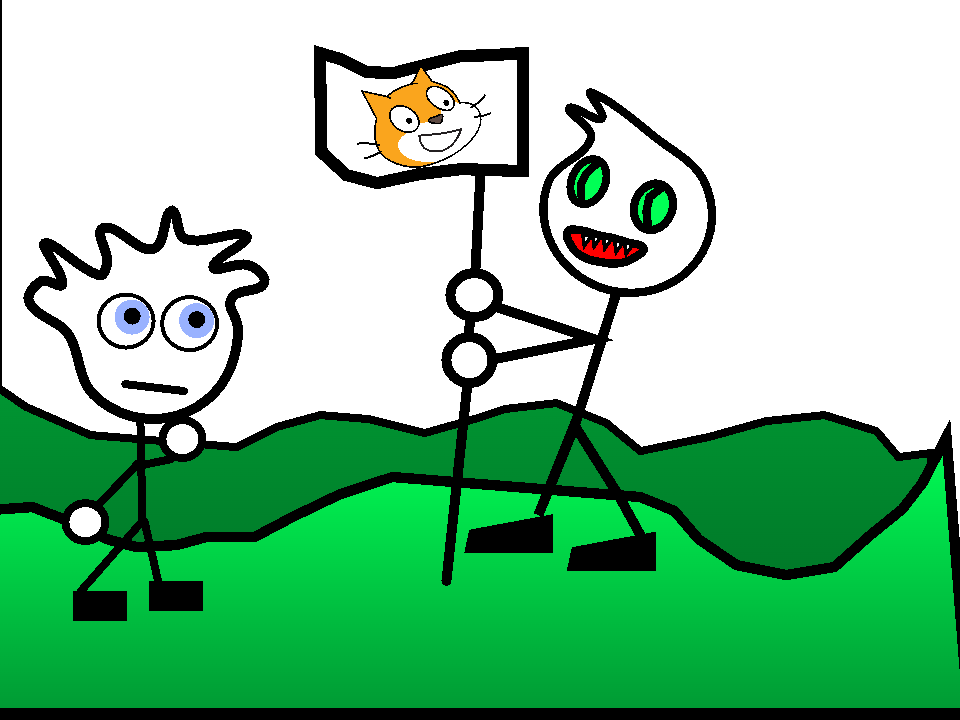

РСС (Русское Сообщество Скретчеров) - сообщество русскоязычных скретчеров (пользователей сайта Scratch), созданное скретчером Maks2007. 17 августа 2017 года Макс выложил проект под названием "Макс говорит больше РСС".
Множество русских скретчеров были объединены и до этого в единое сообщество, Катторию, но к тому моменту оно находилось в упадке. Создание РСС вызвало некоторое оживление.
К 2018 в РСС набралось достаточно большое количество участников. Украш создал Дискорд-сервер РСС - одно из первых сообществ русскоязычных скретчеров вне этого сайта. Таким образом огромное количество Русскоязычных Скретчеров узнали про Дискорд, хотя до этого регулярным местом общения, кроме скретча, были Скайп и ВК. РСС проявлял бурную активность такую как Ютуб-канал РСС, сайты, новости и так далее.
2019 год не был особенно богат событиями, но в то же время этот год - одна из самых чёрных страниц в истории РСС: именно тогда началась война с Жекой.
В феврале 2020 года Макс передал управление РСС Украшу. Он собирался создать сайт сообщества, проводить различные конкурсы, но эти планы не были доведены до конца. В марте 2020 года начинается локдаун, а вместе с ним - и приток новых скретчеров. Они начали активно взаимодействовать друг с другом, объединяться. Вернулись некоторые ушедшие скретчеры. Всё это освежило РСС.
Если в январе 2020 года сообщество насчитывало около 500 человек, то к маю того же года оно увеличилось в 4 раза, до двух тысяч человек.
11 сентября 2021 года Украш заявил, что "РСС мертво" и создал ДеРуК - Демократическое Русскоязычное Коммьюнити и одноимённое расширение для браузера. Однако расширение довольно быстро стало работать с перебоями, а его код стал очень сложным. Ситуация осложнялась ещё и тем, что данные всех пользователей хранились в одном файле, а так же особенностями хостинга. В итоге ДеРуК было заброшено к концу октября 2021.
В начале января Украш заявляет (скорее констатирует факт), что ДеРуК мертво: многие старые скретчеры, которые принесли большой вклад в развитие РСС ушли по тем или иным причинам. Многие не согласились с таким мнением, ведь на смену старым скретчерам пришли новые, а РСС стал более широким понятием, фактически заменяющим понятие "русскоязычный скретч". Сейчас кто-то употребляет термин "РСС", кто-то - "пост-РСС", кто-то - "русский скретч", подразумевая совокупность всех русскоязычных скретчеров.
Многие скретчеры начинают проявлять активность вне скретча из-за ужесточившихся правил сайта, блокировок пользователей практически без причины.
В марте 2022 проходят "выборы" РСС, на которых побеждает -luni, но выборы эти - не более чем просто формальность.
Макс - создатель РСС.
Украш - получил право управления РСС в 2020. Создатель сайта РСС и расширения ДеРуК.
Луни - получил право управления РСС в 2023. Создатель luctisity.
Жека - создатель СЖЗС и инициатор около 90% срачей. Получил свою известность благодаря серии конфликтов, прозванных войной с Жекой.
Лорд - создатель wikiscratch, единственного более-менее успешного проекта в РСС.
Нери - создатель RC, анонимной группировки хакеров.
wikiscratch - проект White_Lord. Эта вики - сборник биографий скретчеров, а также место для общения.